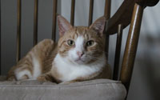
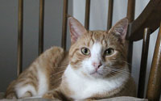
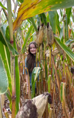
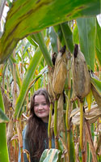
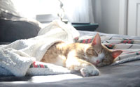
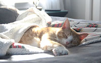
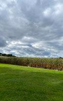
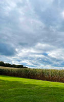

Digital Photos Project |
|
| Home Bookmark Print Project Digital Photos Project Infographic Project Video Project | |
| The goal for this project was to take pictures using various composition techniques and then edit them to improve lighting and other aspects. I took a total of eight pictures and then narrowed it down to the following four photographs which I then edited in Adobe Photoshop. |
|
|

This picture was taken with the Cannon EOS REBEL T3i camera. The shutter speed was set to 1/250s and the ISO was set at 6400. Little light was let into the image so it is dark and has many shadows. However, when I went to adjust this Gus, the cat, moved so this was the best picture I got. |

I brought some more color into the photo to highlight the white spots in his fur. I also cropped the image to utilize the rule of thirds and draw more attention to Gus. By adjusting the lighting the whites in his fur and eyes make them more noticeable and vibrant. To do that I used the curves and levels tools in Photoshop to get rid of some of the shadows. |
|

Taken on my iPhone so the settings at the time were unknown. I then took them off the information tool in my phone and got the shutter speed was 1/228 and the ISO was 32. There is a little light due to all the clouds. Many The photo was taken at eye level. |

I cropped the photo and adjusted some of the light using the curves tool in Photoshop to bring a little more highlights in. I also changed the color of the leaf using the lasso tools to select it and then used color and saturation to change it to green to draw attention onto the subject. |
|

This picture was taken with the Cannon EOS REBEL T3i camera. The shutter speed was set to 1/1600s and the ISO was set at 6400. It was a bright sunny morning so a lot of light was coming in through the window making some parts of his fur hard to see. Gus, the cat, is also slightly blurry. |

I cropped the image to the proper size of 3x5 and to better utilize the rule of thirds. I also adjusted some of the light levels and curves to add more shadows and take away some highlights; to better show his fur so it wasn’t as lost in the light rays. When cropping the photo I took away the bright white spot from the window so Gus was more of the focus. |
|

Taken on my iPhone so the settings at the time were unknown. I then took them off the information tool in my phone and got the shutter speed was 1/4831 and the ISO was 32. There is a little light due to all the clouds. Many shadows but the corn is illuminated by the sun rays. |

I adjusted some of the light adjustments using the level and curve tools in Photoshop. In addition I adjusted the hues and saturation levels of the sky to add more blue tones. I also used the stamp tool to fix up the trees in the distance and the bottom of the corn stalks. |
| Home Bookmark Project Digital Photos Project Infographic Project Video Project | |
|
©2023 Sydney Artim | |